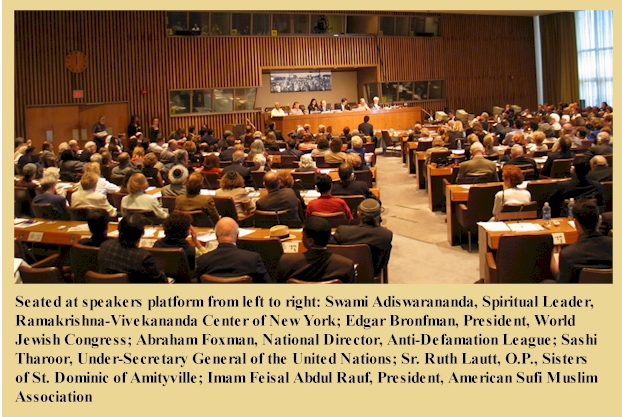
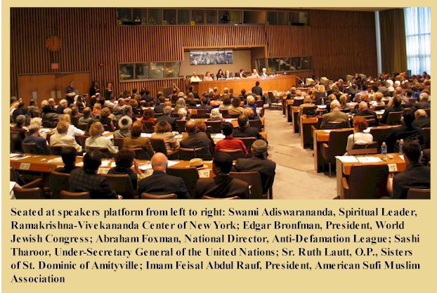

Ramakrishna-Vivekenanda Center of New York
Image Gallery
United Nations Conference on Unlearning Intolerance
June 21, 2004

 


On June 21, 2004 the United Nations held an all-day Conference at its headquarters in New York City on Unlearning Intolerance. Swami Adiswarananda, Spiritual Leader of the Ramakrishna-Vivekananda Center of New York was invited to join a number of distinguished participants in speaking on the subject of “Education for Tolerance and Understanding.” Attending the Conference were more than 500 specially invited persons representing various delegations and departments of the United Nations, Non-Governmental Organizations associated with the United Nations and delegates from other organizations specifically interested in the area of combating intolerance of every kind. The Conference was convened by United Nations Under-Secretary-General for Communications and Public Information, Shashi Tharoor.
The Conference was opened by United Nations Secretary-General Kofi Annan, followed by a keynote address by Nobel Peace Prize-laureate Elie Wiesel. Then, as moderator of the program, Under-Secretary-General Shashi Tharoor introduced each of the distinguished participants who presented their remarks on the subject of “Unlearning Intolerance.”
The Conference was also simultaneously webcast over the internet by the United Nations and the complete conference will remain available on the website archives of the United Nations (www.un.org/webcast/2004/html).
Swami Adiswarananda and other Conference participants interviewed on nation-wide Public Broadcasting System News Program
On the day following the United Nations Conference, Swami Adiswarananda and three of the Conference participants were invited to appear for an interview on “The Charlie Rose Show,” a popular, nation-wide news interview program of the Public Broadcasting System (PBS), to discuss the United Nations Conference and some of its highlights. Participating with Swami on the program were, Nobel Peace Prize-laureate Elie Wiesel, National Director of the Anti-Defamation League Abraham Foxman, and Advisor to the Secretary General of the United Nations, Edward Mortimer.
Unlearning Intolerance
The Changing World
Science and technology have brought the world together. The earth has become a global village. But our minds have not come together. That which keeps us separate and divided is intolerance.
Many Faces of Intolerance
Intolerance has many faces: social intolerance, political intolerance, psychological intolerance, and religious intolerance.
It is this intolerance that has prompted apparently peaceful, loving human beings to act like brutes. This intolerance has promoted religious wars, riots, cold wars, and hatred. It has been the cause of broken homes, broken friendships, and broken communities.
The Basis of Tolerance
Hinduism teaches the oneness of existence, unity of faiths, nonduality of the Godhead, and divinity of the soul. Oneness of existence is the basis of all love, compassion, and charitable feelings. We are like the leaves of a huge, universal tree. Prompted by intolerance, we disclaim the rights of others. But we forget that the leaves cannot survive without the tree. No one can be at peace while keeping others unhappy. No one can enjoy prosperity being surrounded by the world of poverty.
Tolerance: The Message of the Great Prophets and Traditions
Nonviolence and tolerance are the basic virtues taught by the great teachers of all traditions. While the prophets teach love and tolerance, traders in religion teach separativeness and selfishness that disclaim the rights of others.
Diversity of culture and tradition without a bond of unity and peace is socially dangerous, reprehensible, and explosive. We must ask ourselves whether we should join the main stream in tolerance or remain in our cultural, social and religious ghettos. Intolerance in any form is like a tumor that destroys the body and ultimately destroys itself.
The Need of the Hour
It is the need of the hour that we unlearn intolerance by overcoming our narcissistic prejudices and minor differences. Unity in diversity is the natural law, and we must accept it. The core of this unity is spiritual. Fear, hatred, bigotry and war are symptoms of that forgotten spiritual unity. Unlearning calls for a spiritual revival at all levels. It calls for the promotion of moral and spiritual values, and calls for every one of us to set an example.
The Duty of the Leaders of Thought
The attitude of advanced nations toward the people who are struggling to free themselves from age long poverty and hardship should be one of sympathy and service, not of patronage and control. Unlearning intolerance calls for heightened awareness of others based on the oneness of the universe. Leaders of thought are called upon to convince people that only tolerance can bring social stability and individual peace, and that the way of intolerance is self-destructive. Intolerance arises from giving in to our lower nature and is destructive of all social values. Through education and spiritual living, we must convince people that tolerance and mutual understanding are vital for their own well-being and success. Unlearning intolerance begins from the individual level. Since differences can never be abolished, we must learn to live with them with dignity and optimism.
Unlearning Intolerance calls for Spiritual Revival
Social and religious leaders bear a heavy responsibility in this regard. They must teach this generation that unity and tolerance cannot be promoted simply by treaties and diplomatic understandings, by symposiums and debates. We must learn to love each other in our social and individual lives. The cost of intolerance is too heavy to ignore. Pastors and priests, monks and nuns, and religious leaders of all faiths must emphatically put forward before the public that love and compassion are the basic bonds of humanity. Secular humanism without a spiritual basis—that is to say, that the same God dwells in the hearts of all—will not be much help to unlearn intolerance.
Hatred is conquered by love, ignorance by knowledge, and superstition by right thinking. Each one of us is called upon to promote these values not only for our social and community welfare, but also for our individual peace, happiness, and prosperity. It is by transforming ourselves that we transform the world. The key to transformation is the transformation of the soul. When we work together, we can certainly create a better world by understanding the purpose of the universe and identifying ourselves with it.
Sri Ramakrishna’s Message
Sri Ramakrishna, India’s prophet of the harmony of religions, reminded us that the essence of religion is God-consciousness. When that is forgotten, religious differences begin—and not before.
The oneness of existence and harmony of religions are cardinal principles of Hinduism, and the Ramakrishna Order stands as an example of unity, tolerance, and diversity. There are monks in the Ramakrishna Order who are Muslim, Christian, Jewish, and Hindu. They live together, dedicating their lives to the service of all humanity. Its centers all over the world teach people to develop spiritually by seeing God in the hearts of all beings, irrespective of caste, creed, and culture.
Swami Vivekananda at the Parliament of Religions
This is the ideal which Sri Ramakrishna and his disciple Swami Vivekananda presented before the world. Foreseeing the need of our age, 111 years ago at the First World Parliament of Religions in Chicago, Swami Vivekananda made his famous farewell remarks—and I quote:
Sectarianism, bigotry, and its horrible descendant, fanaticism, have long possessed this beautiful earth. They have filled the earth with violence, drenched it often and often with human blood, destroyed civilization, and sent whole nations to despair. Had it not been for these horrible demons, human society would be far more advanced than it is now. But their time is come; and I fervently hope that the bell that tolled this morning in honor of this convention may be the death-knell of all fanaticism, of all persecutions with the sword or with the pen, and of all uncharitable feelings between persons wending their way to the same goal.
Swami Vivekananda’s call for unity and love and tolerance is the voice of the prophets, saints, and seers of all traditions. If we fail to heed this call, our civilization is doomed to destruction. This is the merciless law of history. But, the Swami’s assurance that the end of fanaticism and intolerance may be at hand—that we do have a choice, and that we can do better—gives us hope.